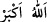
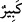
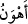
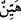
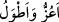
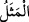
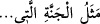
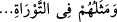

âyet insanların kendi aralarında iddiâ ettiklerine ve inandıklarına göre gelmiş olur.
Yoksa Allâh’a ilk olarak yaratma zor/ağır gelmemiştir ki onların tekrar yaratılması zor
olsun.
Kâşifî der ki: “Sizin îtikadınızda iâde, yâni bir şeyi tekrar yaratmak, ibdâ‘/yoktan var
etmekten daha kolaydır. O hâlde yoktan var etmeyi kabul edersiniz de iâdeyi neden inkâr
edersiniz? Hakk’ın kudreti karşısında ibdâ’ ve iâde eşittir.”
O’nun kudreti noksanlıktan münezzehtir.
Halkı getirmek/yaratmak ve götürmek/öldürmek eşittir
Ben ve sana göre zor olan şey,
Kemâl ile muttasıf olan Hakk’ın kudreti için kolaydır
Bazıları “
(Allah en büyüktür)” ifâdesinin “
(büyüktür)” mânâsına olduğu
gibi bu âyetteki “
(daha kolay)” kelimesinin “
(kolay)” mânâsına olduğunu
söylemiştir. Ferezdak şöyle der:
Göğü yükselten bizim için binâ etti
Sütunları şerefli ve uzun bir ev
Bu şiirde de “
(daha şerefli ve daha uzun)” kelimeleri, şerefli ve uzun
mânâsına kullanılmıştır.
et-Te’vîlâtü’n-Necmiyye’de şöyle der: “Tekrar yaratma Allâh’a göre ilk yaratmadan
daha kolaydır. Çünkü Allah ilk yaratmada doğrudan kendisi yaratmaya başladı. Tekrar
yaratma ise İsrâfil (a.s.)’ın sûra üfürmesiyle başlayacaktır. İnsanların nazarında bir işe
başkası vâsıtasıyla girişmek bizzat girişmekten daha kolaydır. Allah katında ise eşittir.
Çünkü başkalarının fiilleri de Allah tarafından yaratılmıştır.
Burada son derece ince ve latîf bir işâret daha vardır: “O da Allâh’a, insanların tekrar
yaratılmalarının baştan yaratılmalarından daha kolay olduğudur. Çünkü, ilk yaratmada
onlar hâdis olmanın kiriyle ve varlıkta Allâh’a ortak olmanın lekesiyle lekelenmemişti.
İlk yaratılışta izzet ve şereflerinden dolayı Allah bizzat doğrudan kendisi başlayıp
onları yarattı. Tekrar yaratmada ise değersizlikleri sebebiyle başkası vâsıtasıyla
başlayacaktır.”
“Göklerde ve yerde (tecellî eden) en yüce sıfat O’nundur.” Yâni Allah Teâlâ’ya
âiddir. Yâni göklerde ve yerde Allah mahlûkatın dilinde hem sözlü olarak hem de
delillerin lisânıyla bu en yüce sıfat ile vasfedilmiş ve tanınmıştır.
“
” kelimesi, “
cennetin sıfatı/özelliği” (er-Ra‘d, 13/35) ve “
onların Tevrat’taki sıfatları/vasıfları” (el-Feth, 48/29) âyetlerinde
olduğu gibi sıfat/vasıf anlamınadır. Yâni umûmî kudret, tam hikmet ve başkalarında
bulunmayan diğer kemâl sıfatlar sâdece O’na âiddir. Eşit olmak bir yana, kimse bu
sıfatlara yaklaşamaz. Üstün ve yüce olan sıfatlar O’na mahsus olduğu gibi mükemmel
kudret ve kuşatıcı hikmet, zâtının vahdeti ve sıfatlarının azameti de böyledir.